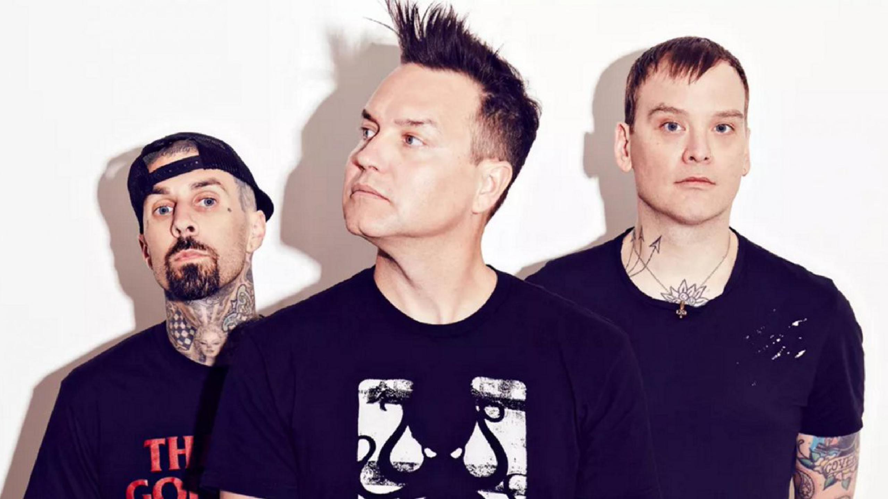
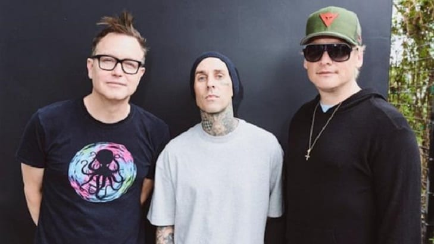
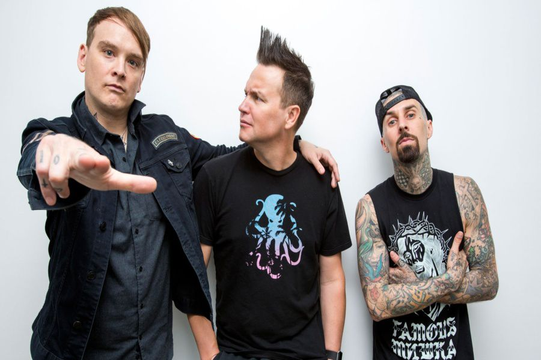
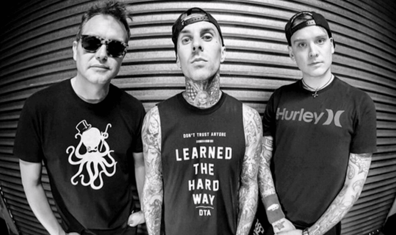
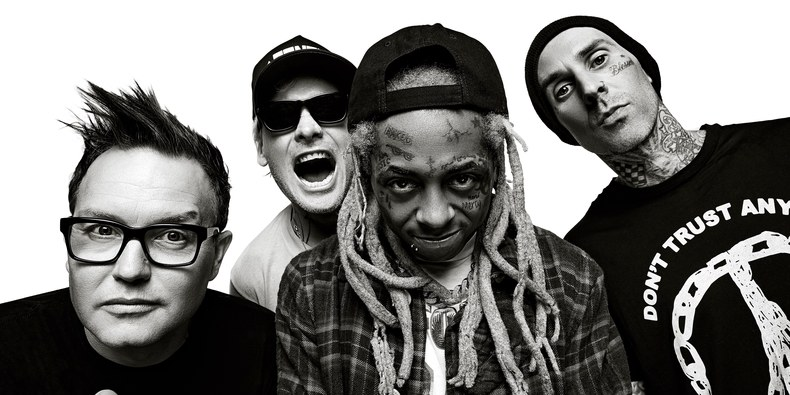

Integrantes
- Mark
- Travis
- Tom
Blink-182 (frecuentemente estilizado blink-182) es una banda californiana de pop punk,1234 formada el 2 de agosto de 1992 por Tom DeLonge (quien más tarde, en 2015, sería sustituido por Matt Skiba), Mark Hoppus, y Scott Raynor (quien en 1998 sería sustituido por Travis Barker) en Poway, California. Son considerados como pioneros del pop punk y como una de las bandas que contribuyó a su éxito masivo internacional a finales de los 1990 y principios de los 2000. Poco tiempo después de lanzar su primer álbum de estudio en 1995, Cheshire Cat, seria su primer disco oficial ya que antes habían grabado 3 demos, entre ellos Buddha, el cual incluiría uno de sus más grandes éxitos Carousel, la entonces banda llamada «Blink» tuvo que añadir el número «-182» a su nombre debido a que una banda techno irlandesa ya se llamaba «Blink» y amenazó con emprender acciones legales, el 182 lo eligió Mark Hoppus debido a que estaba hablando por teléfono y fue lo primero que se le ocurrió. Tras el primer éxito de Blink-182 con Dude Ranch, de 1997, su segundo álbum de estudio, DeLonge y Hoppus decidieron expulsar a su baterista original, Scott Raynor. Las razones de su despido nunca han sido aclaradas oficialmente por los dos primeros, aunque Raynor aseguró en varias entrevistas que fue culpa de su alcoholismo. Travis Barker, baterista entonces de The Aquabats, reemplazó a Raynor y con él la banda logró acceder al mainstream y al éxito mundial con las superventas de Enema of the State, lanzado en 1999 por MCA Records. Este éxito continuó con su álbum en vivo The Mark, Tom and Travis Show (The Enema Strikes Back) de noviembre de 2000, y con Take off your pants and jacket de junio de 2001. A finales del 2003, tras varios ensayos con bandas paralelas y rumores sobre su separación, lanzaron lo que fue en ese momento su último álbum de estudio, que no fue titulado. Apenas dos años después, en 2005, la banda hizo oficial su separación y surgieron, a su vez, dos grupos de esta ruptura: Angels and Airwaves liderado por DeLonge, y +44 con Hoppus y Barker.
Galeria
|  |  |
|  |  |
|  |